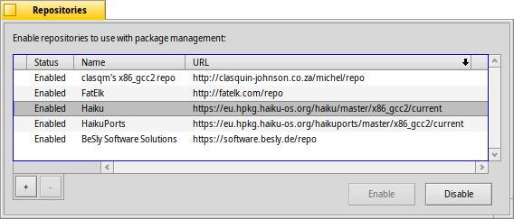

リポジトリ
リポジトリ
| Deskbar: | ||
| 場所: | /boot/system/preferences/Repositories | |
| 設定ファイル: | ~/config/settings/Repositories_settings |
リポジトリはソフトウェアパッケージのコレクションです。初期設定では、オペレーティングシステムのパッケージをすべて備えた Haiku リポジトリと、たくさんの Haiku に移植されたソフトウェアおよびネイティブな Haiku ソフトウェアを提供する HaikuPorts リポジトリがあります。さらに、Haiku コミュニティメンバーによってキュレートされたいくつかのリポジトリがあります。ウェブサイト上の、ソフトウェアサイト (Software Sites) をチェックしてください。
これは、ユーザーのリポジトリを管理するプレファレンスパネルです (HaikuDepot の メニューからも開けます):
既知のリポジトリのリスト内の最初の列は、それが有効かどうかを示しています。チェックマークが無ければ、それは HaikuDepot や、コマンドラインからの pkgman で検索されないでしょう。ボタンを使って、選択されたリポジトリを または にしてください。または、リポジトリをダブルクリックして、状態を切り替えてください。
リポジトリのサイズやインターネット接続の速度にもよりますが、リポジトリの有効化には数秒掛かることがあります。それが長く掛かる場合は、 ボタンの上の小さなテキストボックスにタスクが終了してないことが表示されます。非常に長く掛かる場合は、キャンセルかリトライするよう表示されます。
"" ボタンでリポジトリを完全に削除できるため、それは無効にする必要がありました。
"" ボタンで新しいリポジトリを追加します。それは次のパネルを開きます。

新しいリポジトリを追加するには、その URL をテキストフィールドに貼り付けます。有効にするまで "不明 (Unknown)" と名付けられます。